Day 1：抵達關西 ➔ 寶可夢 DX ➔ 迪奧專櫃 ＆ 藥妝 ➔ 難波地下街
10/31 舊制免稅最後衝刺・大丸心齋橋美妝・難波 Walk

⏰ 11:55 降落 ➔ 15:00 鶴橋民宿 Check-in
關西機場出關 ➔ 鶴橋民宿卸行李休整
11:55 班機落地出示 VJW 快速通關。配合民宿 15:00 入住規定，搭乘 JR 關空快速一車到底飽覽市景，約 14:45 抵達鶴橋，出站步行 4 分鐘準時 15:00 開鎖進門卸行李，約 15:45 輕裝出發心齋橋！
🚇 機場至民宿路線（JR 關空快速一車到底大外圈）
JR 關空快速 關西空港站 ➔ 直通 JR 環狀線大外圈（經西九條、梅田）➔ 直達 JR 鶴橋站。
🛋️ 悠閒車上觀光：配合民宿 15:00 入住規定，全程免搬行李、免轉車，在車上吹暖氣看市景約 80 分鐘，14:45 抵達鶴橋時間剛剛好！
💡 最快出口：鶴橋站走「中央口（東側）」出站，步行 4 分鐘準時 15:00 開門 Check-in！
💡 最快出口：鶴橋站走「中央口（東側）」出站，步行 4 分鐘準時 15:00 開門 Check-in！
東成区東小橋3-11-9
📍 導航民宿
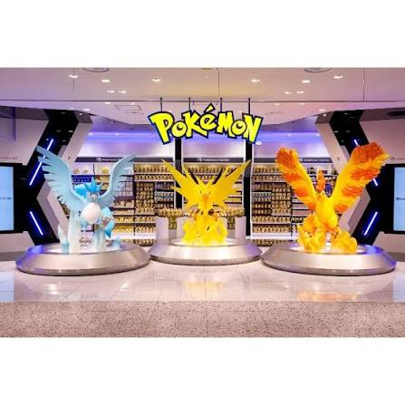
⏰ 16:15～17:45 寶可夢朝聖
大丸心齋橋本館 9F｜寶可夢中心 DX
約 15:45 從鶴橋民宿出發搭地鐵，16:15 抵達大丸 9F 採買限定周邊與拍照打卡，同層設有免稅退稅櫃台。
🎯 景點特色：關西規模最大寶可夢中心之一，入口有巨型皮卡丘迎賓，是寶可夢迷必拍打卡聖地。
🔥 必買推薦：心齋橋限定木木梟/皮卡丘周邊、寶可夢 PTCG 卡牌補充包、精靈球造型生活雜貨。
🎯 景點特色：關西規模最大寶可夢中心之一，入口有巨型皮卡丘迎賓，是寶可夢迷必拍打卡聖地。
🔥 必買推薦：心齋橋限定木木梟/皮卡丘周邊、寶可夢 PTCG 卡牌補充包、精靈球造型生活雜貨。
🚇 鶴橋民宿 ➔ 大丸心齋橋
S 千日前線 鶴橋站 ➔ 搭 3 站至 難波站
↳ 站內換線
M 御堂筋線 難波站 ➔ 搭 1 站至 心齋橋站
💡 最快出口：心齋橋站走「4號或5號出口」，地下通道直通大丸本館 B1，免上地面直搭電梯上 9F！
大丸本館 9F
📍 導航門市
⏰ 17:45～19:30 舊制退稅衝刺
大丸 1F 迪奧專櫃 ＆ 心齋橋重點藥妝
把握 10/31 舊制免稅直接折抵結帳的最後良機，專櫃與藥妝一次購齊！
- Dior 專櫃（大丸 1F）：採買親友託買的美妝保養品，同棟 9 樓退稅櫃台直接辦理免稅退現金。
- 心齋橋藥妝街：鎖定大丸對面連鎖店（Sundrug / 大國 / 松本清），店內直接免稅封袋。
- 美妝專櫃：Dior 癮誘粉漾潤唇膏（熱門色號 001/004）、逆時能量精華。
- 藥妝必備：合利他命 EX Plus 270錠、EVE 白盒/藍盒止痛藥、大正百保能感冒微粒、Wakamoto 若元錠、DHC 維他命C/B群。
🚶 步行動線
大丸 9 樓寶可夢採買完畢 ➔ 搭手扶梯下至 1 樓化妝品專櫃 ➔ 走出大門即是 心齋橋筋商店街。
大丸 1F / 心齋橋筋
📍 導航大丸心齋橋
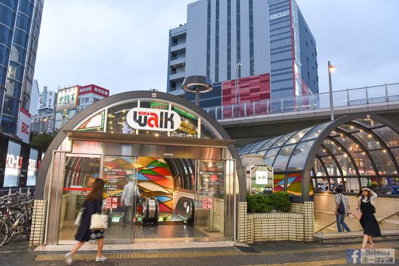
⏰ 19:45～21:30 夜晚晚餐散策
道頓堀跑跑人 ➔ 難波地下街（NAMBA Walk）
走過戎橋拍固力果跑跑人，沿著戎橋筋商店街直走接進難波地下街逛日式雜貨、扭蛋並享用晚餐。結束後搭近鐵直達鶴橋。
🎯 景點特色：難波地下街橫跨兩大地鐵站，長達數百公尺，匯聚近 200 家日系服飾、生活雜貨、日式居酒屋與甜點。
🔥 必吃必逛推薦：鳴門鯛燒本舖（天然鯛魚燒金時地瓜口味）、老爺爺起司蛋糕（Rikuro 難波本店排隊現烤）、3COINS 平價日雜店。
🎯 景點特色：難波地下街橫跨兩大地鐵站，長達數百公尺，匯聚近 200 家日系服飾、生活雜貨、日式居酒屋與甜點。
🔥 必吃必逛推薦：鳴門鯛燒本舖（天然鯛魚燒金時地瓜口味）、老爺爺起司蛋糕（Rikuro 難波本店排隊現烤）、3COINS 平價日雜店。
🧭 從道頓堀走到 NAMBA Walk 零迷路走法：
1. 拍完固力果跑跑人後，順著「戎橋筋商店街」筆直往南走約 2～3 分鐘。
2. 走出拱廊會看見橫向超大馬路（千日前通），斜對面就是超大棟的 Bic Camera。
3. 馬路路口正下方就是 NAMBA Walk「B14 / B16 號入口」，搭手扶梯直下 B1 即抵達最熱鬧的 2nd Avenue！
1. 拍完固力果跑跑人後，順著「戎橋筋商店街」筆直往南走約 2～3 分鐘。
2. 走出拱廊會看見橫向超大馬路（千日前通），斜對面就是超大棟的 Bic Camera。
3. 馬路路口正下方就是 NAMBA Walk「B14 / B16 號入口」，搭手扶梯直下 B1 即抵達最熱鬧的 2nd Avenue！
🚇 吃飽回程返抵鶴橋民宿
直接在地下街沿標示走進 近鐵 大阪難波站（東改札口進站）。
搭乘近鐵奈良線（往奈良/東生駒方向）➔ 僅 2 站直達 鶴橋站（車程 5 分鐘極快！）。
💡 鶴橋站中央口出站，步行 4 分鐘即可回到民宿洗澡休息！
Day 2：Klook 京都精華一日遊
宇治平等院 ➔ 伏見稻荷 ➔ 勝尾寺（達摩寺）
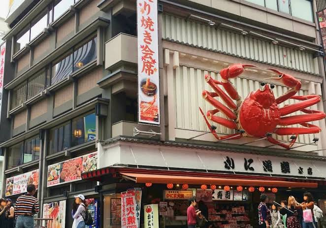
📍 かに道楽 中店門口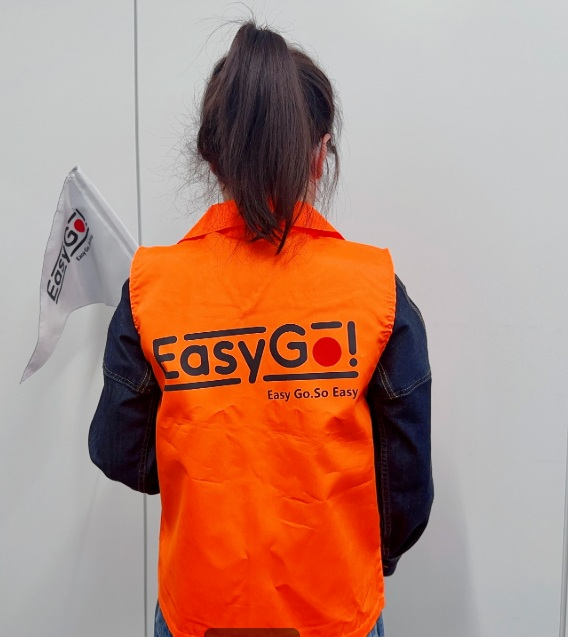
認橘色 EasyGo 背心
⏰ 08:30 前報到集合
道頓堀蟹道樂中店前 集合搭專車
- 門市辨識：道頓堀「かに道楽 中店」正門大螃蟹招牌下（非本店或東店）。
- 工作人員：現場認明身穿亮橘色「EasyGo!」背心、手持隊旗的工作人員報到。
🚇 鶴橋民宿 ➔ 集合點（日本橋站）
S 千日前線 鶴橋站 ➔ 搭 2 站至 日本橋站
💡 最快出口：日本橋站走「2 號出口」上來，沿著道頓堀川往西步行 3 分鐘直達蟹道樂中店！
認橘色 EasyGo 背心
📍 導航蟹道樂中店
⏰ 10:00～12:00 上午
宇治｜平等院鳳凰堂 ＆ 抹茶老街
欣賞十圓日幣國寶鳳凰堂，表參道品嚐中村藤吉／伊藤久右衛門濃抹茶甜點。
🎯 景點特色：日本國寶級古蹟，印在日幣 10 圓硬幣及萬元鈔票上的鳳凰圖騰，阿字池水面倒映著極樂淨土風貌。
🔥 必買必吃推薦：中村藤吉本店（生茶果凍竹筒冰）、伊藤久右衛門（宇治抹茶芭菲、抹茶大福）、宇治上等茶葉煎茶包禮盒。
🎯 景點特色：日本國寶級古蹟，印在日幣 10 圓硬幣及萬元鈔票上的鳳凰圖騰，阿字池水面倒映著極樂淨土風貌。
🔥 必買必吃推薦：中村藤吉本店（生茶果凍竹筒冰）、伊藤久右衛門（宇治抹茶芭菲、抹茶大福）、宇治上等茶葉煎茶包禮盒。
🚌 交通方式
Klook 一日遊專車直達宇治停車場，下車跟隨導遊步行 5 分鐘進表參道。
平等院表參道
📍 導航景點
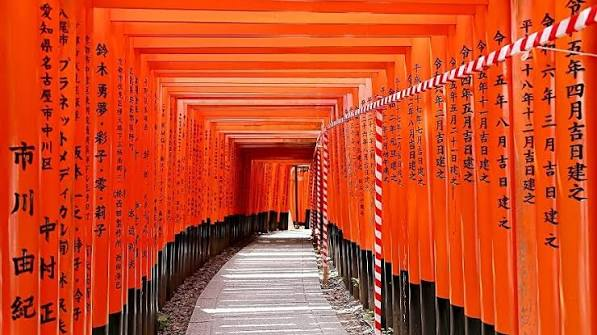
⏰ 12:30～14:30 中午～下午
伏見稻荷大社｜朱紅千本鳥居
走訪綿延不絕的朱紅鳥居隧道，參拜狐狸守護神與狐狸繪馬。
🎯 景點特色：全日本三萬座稻荷神社總本社，以壯觀的「千本鳥居」聞名世界，祈求五穀豐收、商業繁盛。
🔥 必買必做體驗：掛「白狐造型繪馬」（可自己畫狐狸表情臉）、千本鳥居迷你朱紅鳥居守護御守、稻荷狐狸煎餅（寶玉堂）。
🎯 景點特色：全日本三萬座稻荷神社總本社，以壯觀的「千本鳥居」聞名世界，祈求五穀豐收、商業繁盛。
🔥 必買必做體驗：掛「白狐造型繪馬」（可自己畫狐狸表情臉）、千本鳥居迷你朱紅鳥居守護御守、稻荷狐狸煎餅（寶玉堂）。
🚌 交通方式
專車直達伏見稻荷大巴停靠區，步行 3 分鐘穿過鐵道即進入參道。
千本鳥居
📍 導航神社
⏰ 15:30～17:00 下午
勝尾寺（勝運達摩寺）
滿山遍野寫著「勝」字的超萌開運達摩不倒翁，祈求考運、事業與旅程平安！一日遊專車返抵道頓堀後解散。
🎯 景點特色：源自平安時代專求「勝運」的靈驗名剎，全寺石梯、樹枝間擺滿信徒還願的紅色達摩，極度壯觀好拍。
🔥 必買推薦：勝尾寺「勝運達摩神籤」（抽完可帶走或塞入石縫求運）、開眼大達摩（許願時畫左眼，願望達成畫右眼）。
🎯 景點特色：源自平安時代專求「勝運」的靈驗名剎，全寺石梯、樹枝間擺滿信徒還願的紅色達摩，極度壯觀好拍。
🔥 必買推薦：勝尾寺「勝運達摩神籤」（抽完可帶走或塞入石縫求運）、開眼大達摩（許願時畫左眼，願望達成畫右眼）。
勝運達摩
📍 導航勝尾寺
Day 3：京都 10 小時專車包車（08:00～18:00 嚴格不超時）
嵐山竹林 ➔ 清水舞台 ➔ 祇園貓咖 ➔ 寶可夢京都限定店 ➔ 鶴橋燒肉

⏰ 07:50 集合 ➔ 08:00 準時發車
鶴橋民宿門口上車 ➔ 直奔嵐山
- 出發準備：07:50 全員於鶴橋民宿 1F 大廳集合，司機於門口待命。
- 行車路線：走阪神高速往京都嵐山，車程約 70～75 分鐘。
- 下車策略點：司機導航至「天龍寺北門」旁下車，直接進竹林！
車程 75 分鐘
📍 導航天龍寺北門
⏰ 09:15～10:25（限時 70 分鐘）
嵐山精華散策 ➔ 渡月橋準時上車離開
09:15 天龍寺北門下車 ➔ 竹林小徑 ➔ 野宮神社 ➔ 渡月橋北側靠川邊小巴臨停處上車。
🎯 景點特色：高聳入天的嵯峨野竹林綠色隧道，穿過源氏物語歷史名剎野宮神社，漫步至渡月橋眺望大堰川秀麗山水。
🔥 必買必嚐美食：野宮神社黑木鳥居御守、古都芋本舖（現烤炙燒四色糰子、軟糯日式醬油糰子）、% Arabica 嵐山景觀咖啡。
🎯 景點特色：高聳入天的嵯峨野竹林綠色隧道，穿過源氏物語歷史名剎野宮神社，漫步至渡月橋眺望大堰川秀麗山水。
🔥 必買必嚐美食：野宮神社黑木鳥居御守、古都芋本舖（現烤炙燒四色糰子、軟糯日式醬油糰子）、% Arabica 嵐山景觀咖啡。
⚠️ 鐵則警報：10:25 必須全員上車關門發車！嵐山往清水寺車程約 45～50 分鐘！
⏰ 11:15～14:00 午餐與參拜
清水舞台 ➔ 音羽之瀧 ➔ 二年坂老街午餐
11:15 五條坂下車步行上山，司機前往市區四條烏丸待命。參觀國寶舞台後走二年坂老街午餐。
🎯 景點特色：世界文化遺產，全棟未用一根釘子的木造「清水舞台」，底下的音羽之瀧三道清泉代表健康、學業、姻緣（選一道喝）。
🔥 必買伴手禮：本家西尾八ッ橋（生八橋抹茶/肉桂餅皮）、清水寺開運「頭上結草」護身符、二年坂傳統京扇子。
🎯 景點特色：世界文化遺產，全棟未用一根釘子的木造「清水舞台」，底下的音羽之瀧三道清泉代表健康、學業、姻緣（選一道喝）。
🔥 必買伴手禮：本家西尾八ッ橋（生八橋抹茶/肉桂餅皮）、清水寺開運「頭上結草」護身符、二年坂傳統京扇子。
⏰ 14:00～14:30 祇園徒步
二年坂 ➔ 八坂神社 ➔ 祇園花見小路 ➔ 鴨川
吃完午餐後沿寧寧之道漫步至八坂神社，穿過朱紅西樓門沿四條通跨過四條大橋賞鴨川。
🎯 景點特色：京都藝妓文化中心，八坂神社的美御前社擁有「美容水」相傳拍臉會變帥變漂亮，花見小路充滿古色古香的木造町家茶屋。
🎯 景點特色：京都藝妓文化中心，八坂神社的美御前社擁有「美容水」相傳拍臉會變帥變漂亮，花見小路充滿古色古香的木造町家茶屋。
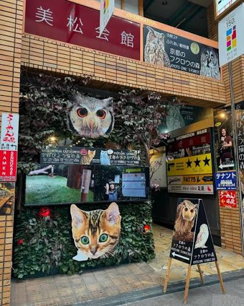
⏰ 14:40～15:30 擼貓放鬆
新京極商店街｜京都豹貓之森（Cat Cafe）
位於新京極ヒカリビル 2F，全日本極少見的豹貓專門咖啡廳，喝飲料摸貓補體力！
🎯 亮點體驗：室內打造成綠意盎然的熱帶雨林，滿屋子活潑親人的純種豹貓（Bengal），點一杯飲料吹冷氣與貓咪互動拍照超療癒。
🎯 亮點體驗：室內打造成綠意盎然的熱帶雨林，滿屋子活潑親人的純種豹貓（Bengal），點一杯飲料吹冷氣與貓咪互動拍照超療癒。
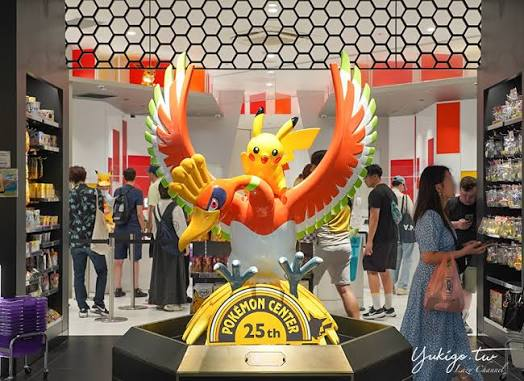
⏰ 15:45～16:30（16:30 準時發車回大阪）
SUINA室町 2F｜寶可夢中心京都店（Pokemon Center）
鎖定藝妓皮卡丘公仔、金色鳳王徽章！採買至 16:25，16:30 準時由 SUINA室町西側室町通上車回大阪！
🎯 景點特色：京都獨一無二的和風主題寶可夢店，門口有洛奇亞與鳳王盤旋造景。
🔥 必買限定神物：京都店限定「舞妓/藝妓皮卡丘」毛絨公仔（手拿櫻花油紙傘超精緻）、和風花紋鳳王徽章、京都限定和紙手帳膠帶。
🎯 景點特色：京都獨一無二的和風主題寶可夢店，門口有洛奇亞與鳳王盤旋造景。
🔥 必買限定神物：京都店限定「舞妓/藝妓皮卡丘」毛絨公仔（手拿櫻花油紙傘超精緻）、和風花紋鳳王徽章、京都限定和紙手帳膠帶。
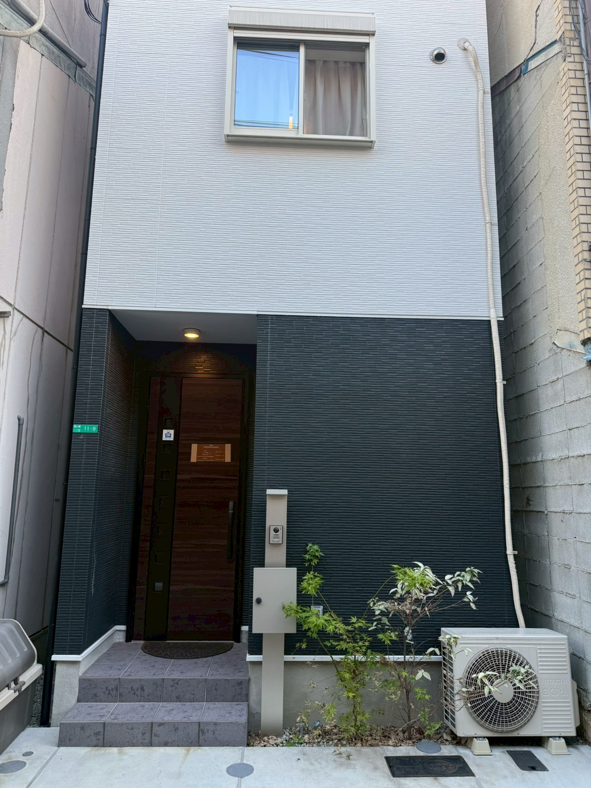
⏰ 18:00～20:00 燒肉晚餐
四條烏丸上車 ➔ 返抵鶴橋民宿 ＆ 燒肉晚餐
約 18:00 前準時回到鶴橋民宿門口，步行至鶴橋燒肉一條街享受炭火黑毛和牛慶功！
🎯 美食特色：鶴橋是全日本首屈一指的韓式烤肉與黑毛和牛聖地，整條巷子香氣四溢、炭火直烤肉質鮮嫩爆汁。
🔥 必點招牌部位：特選和牛橫膈膜（ハラミ，油花勻稱肉味濃郁）、厚切蔥鹽牛舌（牛タン）、特等牛五花（カルビ）搭生啤酒。
🎯 美食特色：鶴橋是全日本首屈一指的韓式烤肉與黑毛和牛聖地，整條巷子香氣四溢、炭火直烤肉質鮮嫩爆汁。
🔥 必點招牌部位：特選和牛橫膈膜（ハラミ，油花勻稱肉味濃郁）、厚切蔥鹽牛舌（牛タン）、特等牛五花（カルビ）搭生啤酒。
Day 4：通天閣 ➔ 阿倍野 ➔ 爐端燒晚餐
11/3 文化之日・一蘭拉麵朝食與百萬夜景
⏰ 08:30～09:45 早餐
道頓堀 一蘭拉麵早餐
晨間時段避開排隊人潮，享用濃郁天然豚骨拉麵。
🎯 美食亮點：經典個人「味集中座位」、獨家赤紅秘製醬汁、客製化麵條硬度與湯頭濃度，加點半熟溏心蛋與釜醬汁叉燒絕配！
🎯 美食亮點：經典個人「味集中座位」、獨家赤紅秘製醬汁、客製化麵條硬度與湯頭濃度，加點半熟溏心蛋與釜醬汁叉燒絕配！
🚇 鶴橋民宿 ➔ 道頓堀一蘭
S 千日前線 鶴橋站 ➔ 搭 2 站至 日本橋站
💡 最快出口：日本橋站走「7 號出口」，出站沿千日前通轉入道頓堀川旁，步行 4 分鐘抵達一蘭本館！
道頓堀本館
📍 導航一蘭
⏰ 10:00～13:30 溜滑梯＆串炸
通天閣溜滑梯 ＆ 新世界串炸
挑戰 TOWER SLIDER 溜滑梯；吃元祖串炸達摩、玩傳統射擊打靶。
🎯 景點特色：大阪下町懷舊風情，摸頂樓比利肯神像（Billiken）腳底求好運。全新「TOWER SLIDER」從 3 樓繞著塔身溜到 B1，全長 60 公尺僅需 10 秒超刺激！
🔥 必吃美食：元祖串炸達摩（牛肉串、紅薑、炸起司，沾獨門醬汁）。
🎯 景點特色：大阪下町懷舊風情，摸頂樓比利肯神像（Billiken）腳底求好運。全新「TOWER SLIDER」從 3 樓繞著塔身溜到 B1，全長 60 公尺僅需 10 秒超刺激！
🔥 必吃美食：元祖串炸達摩（牛肉串、紅薑、炸起司，沾獨門醬汁）。
🚇 道頓堀 ➔ 通天閣
從日本橋站搭 K 堺筋線（往天下茶屋方向）➔ 搭 1 站至 惠美須町站
💡 最快出口：惠美須町站「3 號出口」上來直面通天閣本通，筆直走 3 分鐘進塔！
新世界
📍 導航通天閣
⏰ 16:30～18:30 展望台日落
阿倍野 HARUKAS 300 展望台
60 樓 360 度玻璃迴廊，俯瞰夕陽與大阪百萬璀璨夜景。
🎯 景點特色：高達 300 公尺的日本第一摩天大樓，60 樓擁有全透明無死角的空中迴廊，從黃昏落日漸變到百萬繁星夜景絕美無比。
🔥 必買紀念品：HARUKAS 專屬吉祥物「阿倍野熊（Abenobea）」雲朵絨毛玩偶、晴空造型吊飾。
🎯 景點特色：高達 300 公尺的日本第一摩天大樓，60 樓擁有全透明無死角的空中迴廊，從黃昏落日漸變到百萬繁星夜景絕美無比。
🔥 必買紀念品：HARUKAS 專屬吉祥物「阿倍野熊（Abenobea）」雲朵絨毛玩偶、晴空造型吊飾。
🚇 通天閣 ➔ 阿倍野 HARUKAS
惠美須町搭堺筋線 1 站至動物園前，轉 M 御堂筋線 1 站至 天王寺站
💡 最快出口：天王寺站走「9 號或 10 號出口」地下連通道，直達阿倍野 HARUKAS B1 迎賓大廳！
HARUKAS 60F
📍 導航展望台
⏰ 19:00～20:30 預約晚餐
力丸爐端燒 網兵衛（天王寺店）
體驗長木槳送餐烤物！結束後直搭 JR 環狀線回鶴橋。
🎯 餐廳特色：師傅坐在環形吧台中央炭火前現烤，烤熟後用超長木槳（船槳）直接將熱騰騰的烤盤送到面前，極具日式傳統儀式感！
🔥 必點招牌：帶殼現烤大帆立貝（蒜香牛油醬汁）、巨大鹽烤海老、烤雞肉串拼盤、生薑燒肉。
🎯 餐廳特色：師傅坐在環形吧台中央炭火前現烤，烤熟後用超長木槳（船槳）直接將熱騰騰的烤盤送到面前，極具日式傳統儀式感！
🔥 必點招牌：帶殼現烤大帆立貝（蒜香牛油醬汁）、巨大鹽烤海老、烤雞肉串拼盤、生薑燒肉。
🚇 HARUKAS ➔ 網兵衛 ➔ 回鶴橋民宿
從 HARUKAS 穿過 JR 天王寺站 ➔ 出 「北口」 步行 2 分鐘進堀越町巷弄（力丸爐端燒）。
回程：天王寺站搭乘 JR 環狀線 ➔ 僅 3 站直達 鶴橋站。
💡 最快出口：吃完回程從天王寺站「北口中央改札」進站，直接上環狀線內環月台！
天王寺区堀越町16-9
📍 導航網兵衛
Day 5：大阪城 ➔ 天神橋筋 ➔ 梅田旗艦大血拼 ➔ 民宿火鍋
西日本最大 UNIQLO UMEDA ＆ 任天堂旗艦店 ＆ 溫馨圍爐
⏰ 09:30～11:30 上午
大阪城公園 ＆ 天守閣
登頂眺望大阪市景，漫步西之丸庭園感受壯麗石牆。
🎯 景點特色：大阪地標名城，豐臣秀吉與德川家康的戰國名勝。天守閣 8 樓展望台可 360 度俯瞰大阪城全景與護城河。
🔥 必買紀念品：戰國武將家徽御守（豐臣秀吉五七桐紋）、大阪城限定金色立體城堡磁鐵。
🎯 景點特色：大阪地標名城，豐臣秀吉與德川家康的戰國名勝。天守閣 8 樓展望台可 360 度俯瞰大阪城全景與護城河。
🔥 必買紀念品：戰國武將家徽御守（豐臣秀吉五七桐紋）、大阪城限定金色立體城堡磁鐵。
🚇 鶴橋民宿 ➔ 大阪城公園
JR 環狀線 鶴橋站 ➔ 搭 3 站直達 大阪城公園站（車程 6 分鐘）。
💡 最快出口：大阪城公園站走「1 號出口（改札口直出）」，出站即是平坦景觀大道直通天守閣！
天守閣
📍 導航大阪城
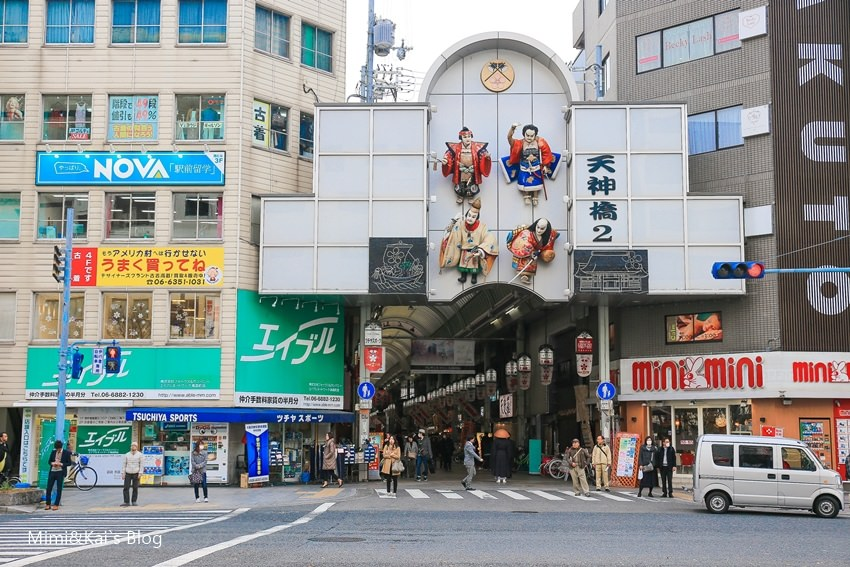
⏰ 12:00～14:00 散策午餐
天神橋筋商店街 午餐邊走邊吃
品嚐中村屋炸可樂餅、春駒壽司、鳴門鯛燒等平價排隊美食。
🎯 景點特色：全日本最長的商店街（橫跨 3 個地鐵站、全長 2.6 公里！），充滿道地大阪庶民生活氣息與銅板美食。
🔥 必吃三大名物：中村屋可樂餅（70日圓外脆內綿鬆軟馬鈴薯）、春駒壽司（高CP值厚切生魚片手握）、鳴門鯛燒（天然炭火烘烤酥脆外皮）。
🎯 景點特色：全日本最長的商店街（橫跨 3 個地鐵站、全長 2.6 公里！），充滿道地大阪庶民生活氣息與銅板美食。
🔥 必吃三大名物：中村屋可樂餅（70日圓外脆內綿鬆軟馬鈴薯）、春駒壽司（高CP值厚切生魚片手握）、鳴門鯛燒（天然炭火烘烤酥脆外皮）。
🚇 大阪城 ➔ 天神橋筋
大阪城公園搭 JR 環狀線 2 站至 天滿站，或從天滿橋搭 T 谷町線 至 天神橋筋六丁目站。
💡 最快出口：天神橋筋六丁目站走「8 號或 12 號出口」，出站直接鑽進商店街拱廊屋頂！
天神橋筋
📍 導航商店街
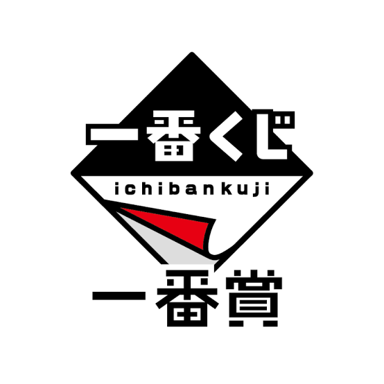
⏰ 14:30～16:00 旗艦抽獎
大丸梅田 13F｜一番賞官方旗艦店 ＆ 任天堂旗艦店
一番賞官方店拆獎、Nintendo OSAKA 瑪利歐合影與 JUMP SHOP 特區。
🎯 景點特色：大丸梅田 13 樓是宅宅頂級樂園，一番賞官方直營店陳列完整展示櫃，同層還有直營任天堂、海賊王、JUMP SHOP。
🔥 必買必抽推薦：當季限定一番賞（A賞/最後賞神物）、Nintendo OSAKA 限定瑪利歐周邊、斯普拉遁射擊遊戲水槍玩具。
🎯 景點特色：大丸梅田 13 樓是宅宅頂級樂園，一番賞官方直營店陳列完整展示櫃，同層還有直營任天堂、海賊王、JUMP SHOP。
🔥 必買必抽推薦：當季限定一番賞（A賞/最後賞神物）、Nintendo OSAKA 限定瑪利歐周邊、斯普拉遁射擊遊戲水槍玩具。
🚇 天神橋筋 ➔ 梅田商圈
T 谷町線 天神橋筋六丁目站 ➔ 搭 1 站至 東梅田站
💡 最快出口：東梅田站走「8 號或 9 號出口」地下連通道往 JR 大阪站方向，直通大丸梅田 B1 入口！
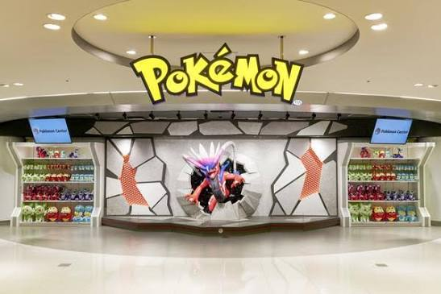
⏰ 16:00～17:00 卡牌與周邊
大丸梅田 13F｜寶可夢中心大阪店（Pokemon Center Osaka）
齊全的卡牌（PTCG）、巨大絨毛娃娃牆與生活雜貨，同層無縫連逛！
🎯 景點特色：大丸梅田老牌旗艦門市，擁有超級巨型的整面寶可夢玩偶牆，PTCG 卡牌周邊（卡套、卡盒）種類全大阪最齊全！
🎯 景點特色：大丸梅田老牌旗艦門市，擁有超級巨型的整面寶可夢玩偶牆，PTCG 卡牌周邊（卡套、卡盒）種類全大阪最齊全！
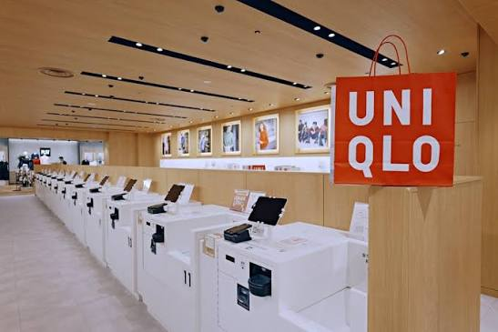
⏰ 17:15～18:45 旗艦免稅採買
LINKS UMEDA 1～2F｜UNIQLO UMEDA 西日本最大旗艦店
西日本最大旗艦門市，聯名款尺碼最齊全，提供客製化 UTme! 與免稅。大丸梅田走 2F 空橋 3 分鐘即達友都八喜「LINKS UMEDA」。
🎯 景點亮點：高達 1,300 坪的巨型雙層門市，聯名 UT 庫存最深、尺碼最足，現場還能親自操作 iPad 客製化印製專屬 UT 衣服與托特包。
🎯 景點亮點：高達 1,300 坪的巨型雙層門市，聯名 UT 庫存最深、尺碼最足，現場還能親自操作 iPad 客製化印製專屬 UT 衣服與托特包。
🚶 換館動線指引
大丸梅田 2F 走「戶外景觀天橋（JR大阪站連絡通道）」過馬路，3 分鐘直通 LINKS UMEDA 2 樓！
⏰ 19:30～21:30 溫馨圍爐
大型超市火鍋料採買 ➔ 鶴橋民宿溫馨火鍋盛宴
LINKS UMEDA B1F 超市或鶴橋站前 LIFE 超市採買黑毛和牛與高湯包，回鶴橋民宿圍爐煮火鍋！
🔥 超市必掃食材清單：黑毛和牛火鍋肉片（晚上 19:00 後常有 20%～半價折扣貼紙）、博多水炊地雞/相撲濃高湯包、甜玉米、大蔥、讃岐烏龍麵條、當季日本新鮮草莓。
🔥 超市必掃食材清單：黑毛和牛火鍋肉片（晚上 19:00 後常有 20%～半價折扣貼紙）、博多水炊地雞/相撲濃高湯包、甜玉米、大蔥、讃岐烏龍麵條、當季日本新鮮草莓。
🚇 梅田 ➔ 回鶴橋民宿
從 LINKS UMEDA 地下直通 JR 大阪站 御堂筋口進站。
搭乘 JR 環狀線（外環/京橋方向）➔ 直達 鶴橋站（車程 15 分鐘，免轉車！）。
💡 最快出口：回鶴橋走「中央口」出站，順路去 LIFE 超市採買或直接回鶴橋民宿！
Day 6：海遊館 ➔ 壽喜燒 ➔ 日本橋動漫 ＆ GiGO
鯨鯊 ➔ 13:45 壽喜燒 ➔ 公仔模型挖寶
⏰ 08:30～09:30 早餐
難波千日前 天政烏龍麵
造訪排隊老舖，品嚐滑順道地的大阪肉烏龍與豆皮烏龍麵。
🎯 美食特色：昭和傳承老店，湯頭採用利尻昆布與柴魚每日清晨熬煮，平價美味、麵條滑嫩彈牙。
🔥 必吃招牌：肉烏龍（肉うどん，鮮甜牛肉與高湯相融）、狐狸豆皮烏龍（きつねうどん）、現炸天婦羅飯糰。
🎯 美食特色：昭和傳承老店，湯頭採用利尻昆布與柴魚每日清晨熬煮，平價美味、麵條滑嫩彈牙。
🔥 必吃招牌：肉烏龍（肉うどん，鮮甜牛肉與高湯相融）、狐狸豆皮烏龍（きつねうどん）、現炸天婦羅飯糰。
🚇 鶴橋民宿 ➔ 難波天政
S 千日前線 鶴橋站 ➔ 搭 3 站至 難波站
💡 最快出口：難波站走難波 Walk 「B21 出口」鑽上來，步行 2 分鐘直達天政門口！
千日前通
📍 導航天政
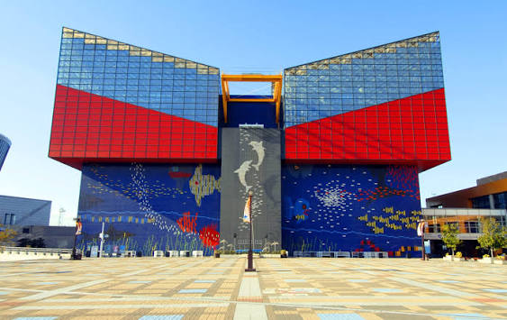
⏰ 10:15～13:00（預約 10:15 場次）
大阪港 海遊館（Kaiyukan）
世界級水族館巨型鯨鯊、環斑海豹與企鵝（預約 10:15 場次）。
🎯 景點特色：全球最大規模水族館之一，以重現環太平洋火山帶為概念，順著 8 層螺旋坡道環繞 9 公尺深的中央大水槽，近距離欣賞鯨鯊優游！
🔥 必看必買：巨型鯨鯊（海吉）、超人氣微笑表情「環斑海豹」、海遊館限定圓滾滾海豹抱枕。
🎯 景點特色：全球最大規模水族館之一，以重現環太平洋火山帶為概念，順著 8 層螺旋坡道環繞 9 公尺深的中央大水槽，近距離欣賞鯨鯊優游！
🔥 必看必買：巨型鯨鯊（海吉）、超人氣微笑表情「環斑海豹」、海遊館限定圓滾滾海豹抱枕。
🚇 難波 ➔ 海遊館（大阪港站）
M 御堂筋線 難波站 ➔ 搭 2 站至 本町站
↳ 站內換線
C 中央線 本町站 ➔ 直達 大阪港站
💡 最快出口：大阪港站走「1 號或 2 號出口」，出站抬頭看大摩天輪筆直走 5 分鐘即抵館！
大阪港站
📍 導航海遊館
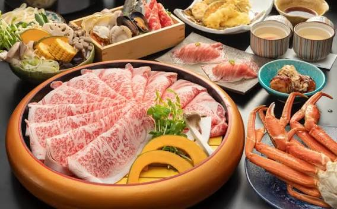
⏰ 13:45～15:15 午餐大餐
道地日式壽喜燒午餐大餐
返回難波避開中午尖峰，品嚐熱騰騰黑毛和牛壽喜燒沾蛋液。
🎯 美食亮點：正宗關西風壽喜燒做法！牛油熱鍋、現煎 A5 和牛撒上白糖與秘製醬汁，沾裹金黃生食級蛋液，入口即化幸福感破表！搭配吸滿醬汁的烤豆腐與蒟蒻絲超滿足。
🎯 美食亮點：正宗關西風壽喜燒做法！牛油熱鍋、現煎 A5 和牛撒上白糖與秘製醬汁，沾裹金黃生食級蛋液，入口即化幸福感破表！搭配吸滿醬汁的烤豆腐與蒟蒻絲超滿足。
🚇 海遊館 ➔ 難波商圈
C 中央線 大阪港站 ➔ 本町站 換 M 御堂筋線 ➔ 回到 難波站。
💡 最快出口：難波站出「11 號或高島屋出口」，步行 3 分鐘進入千日前/南海通壽喜燒餐廳區。
難波商圈
📍 尋找周邊壽喜燒
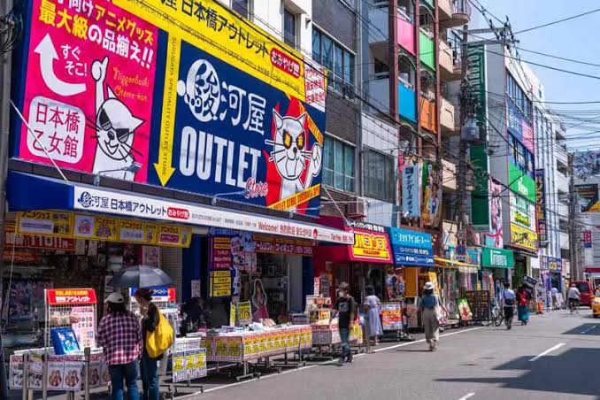
⏰ 15:30～19:30 夾娃娃＆挖寶
難波 GiGO 夾娃娃 ＆ 日本橋公仔挖寶
難波 GiGO 抓最新景品，日本橋 Ota Road 逛駿河屋、AmiAmi、Animate 挖寶。
🎯 景點特色：關西秋葉原「電電城（Den Den Town）」，公仔、模型、一番賞二手專門店、復古紅白機卡帶最密集聖地。
🔥 必逛名店清單：駿河屋大阪日本橋本館（二手模型大本營）、AmiAmi（正版新品手辦）、Animate（動漫周邊輕小說）、GiGO 難波旗艦店（最新日本限定景品夾娃娃）。
🎯 景點特色：關西秋葉原「電電城（Den Den Town）」，公仔、模型、一番賞二手專門店、復古紅白機卡帶最密集聖地。
🔥 必逛名店清單：駿河屋大阪日本橋本館（二手模型大本營）、AmiAmi（正版新品手辦）、Animate（動漫周邊輕小說）、GiGO 難波旗艦店（最新日本限定景品夾娃娃）。
🚇 徒步與回程路線
吃完壽喜燒步行 5 分鐘即達日本橋動漫街。回程從 S 日本橋站 搭 2 站回鶴橋。
💡 最快出口：回程由日本橋站「5 號或 10 號出口」進站，免在大街吹風！
オタロード
📍 導航日本橋動漫街
Day 7：木津市場海鮮盛宴 ➔ JR 直通臨空城 OUTLET ➔ 關西機場返台
頂級生魚片早餐 ➔ JR 關空快速直達臨空城 ➔ 抵達機場搭機
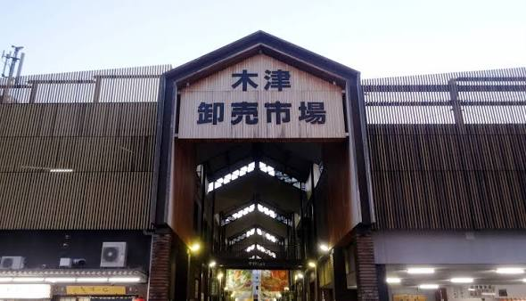
⏰ 08:30～10:30 生魚片盛宴
木津批發市場海鮮採買 ＆ 鶴橋民宿奢華海鮮早餐
採買黑鮪魚、海膽、大干貝刺身回鶴橋民宿早餐，打包行李 11:00 退房。
🎯 景點特色：有 300 年歷史的大阪在地海鮮批發大本營，非觀光化黑門市場，價格超級親民厚道、漁獲當天清晨現殺直送！
🔥 必買奢華刺身：頂級黑鮪魚大腹（大トロ，油脂爆表）、一整盒產地直產生海膽、生食級大干貝拼盤、巨型甜蝦。
🎯 景點特色：有 300 年歷史的大阪在地海鮮批發大本營，非觀光化黑門市場，價格超級親民厚道、漁獲當天清晨現殺直送！
🔥 必買奢華刺身：頂級黑鮪魚大腹（大トロ，油脂爆表）、一整盒產地直產生海膽、生食級大干貝拼盤、巨型甜蝦。
🚇 鶴橋民宿 ➔ 木津批發市場
S 千日前線 鶴橋站 ➔ 難波站 換 M 御堂筋線 ➔ 1 站至 大國町站。
💡 最快出口：大國町站走「1 號出口」，出站向右轉直走 3 分鐘直達木津市場南大門！
⏰ 12:15～16:00 交通與購物衝刺
JR 環狀線直通「臨空城站」 ➔ 暢貨中心最後衝刺
退房後拉行李至 JR 鶴橋站，直達臨空城寄放大件行李血拼！
🎯 景點特色：西日本最大渡假風臨海 Outlet，擁有 250 家國際與日本品牌，依山傍海風景優美，回國前血拼絕佳據點。
🔥 必逛品牌優惠：Nike Factory Store（球鞋折上折超便宜）、Adidas、The North Face 防風機能外套、Beams/United Arrows 日系流行服裝免稅。
🎯 景點特色：西日本最大渡假風臨海 Outlet，擁有 250 家國際與日本品牌，依山傍海風景優美，回國前血拼絕佳據點。
🔥 必逛品牌優惠：Nike Factory Store（球鞋折上折超便宜）、Adidas、The North Face 防風機能外套、Beams/United Arrows 日系流行服裝免稅。
🚇 鶴橋站 ➔ 臨空城站（一車直達）
JR 關空快速 JR 鶴橋站 ➔ 直達 臨空城站（Rinku-Town）（車程約 55 分鐘）。
⚠️ 鐵則：上車務必坐在「第 1～4 節車廂」！（列車在日根野分離，僅前 4 節開往臨空城與關空）。
💡 最快出口：臨空城站走「4 號出口（南口）」走行人空橋直通 Outlet 商場！
💡 最快出口：臨空城站走「4 號出口（南口）」走行人空橋直通 Outlet 商場！
⏰ 16:30 報到登機出境
臨空城站 ➔ 關西國際機場（KIX）辦理登機返台
領回寄放的行李，走回臨空城站搭乘 JR 關空快速（僅 1 站、5 分鐘跨過跨海大橋）即抵達關西機場第一航廈託運行李出境返台！
🔥 出境免稅店必掃伴手禮：ROYCE' 生巧克力、白色戀人白巧克力夾心、Tokyo Banana、獺祭二割三分純米大吟釀、一蘭拉麵盒裝伴手禮。
🔥 出境免稅店必掃伴手禮：ROYCE' 生巧克力、白色戀人白巧克力夾心、Tokyo Banana、獺祭二割三分純米大吟釀、一蘭拉麵盒裝伴手禮。
🚇 臨空城 ➔ 關西機場
JR 關空快速 臨空城站 ➔ 僅 1 站（5分鐘） 抵達 關西機場第一航廈。
💡 出站指引：改札出站直接過 2 樓天橋進第一航廈 4F 國際線出境大廳報到！
🧰 行前與旅途實用工具箱
行李打包清單・重要預約憑證・溝通手指卡
📋 必備清單 Checkbox（自動記憶）
🔖 重要訂單與預約備忘錄
🚌 Day 2 Klook 京都一日遊
集合地點：道頓堀蟹道樂中店門口（認橘色 EasyGo 背心）
🚗 Day 3 京都 10 小時包車
時間：08:00 民宿門口準時發車 ➔ 18:00 前返回民宿
司機聯絡方式 / 訂單號：[已預訂 10 小時方案]
🍢 Day 4 力丸爐端燒 網兵衛
地址：大阪市天王寺区堀越町 16-9（天王寺站北口步行 2 分）
預約時間：19:00（5 人）
🛍️ 託買與個人採購清單（Wishlist）
記錄親友託買物品或必搶戰利品，買到後打勾自動畫線，不怕漏買或重複買！
🗣️ 實用溝通手指卡（點擊放大出示）
結帳、點餐或詢問時，點擊卡片可放大全螢幕，直接展示給店員看！
🛍️ 辦理免稅
免税でお願いします
Menzei de onegaishimasu
🥡 不用提袋
袋はいりません
Fukuro wa irimasen
👥 餐廳人數
5人です
Gonin desu
💳 分開結帳
お会計は別々で
Okaikei wa betsubetsu de
🔍 拿照片找貨
これを探しています
Kore o sagashite imasu
📦 全新商品
新しい在庫はありますか？
Atarashii zaiko wa arimasu ka?
☕ 溫水/熱水
お湯をいただけますか？
Oyu o itadakemasu ka?
🚻 找洗手間
トイレはどこですか？
Toire wa doko desu ka?
💰 5 人公費記帳簿
多幣別記錄・自選分攤成員・當日智慧多退少補結算
💱 即時匯率試算
匯率連線中...
🇯🇵 日幣 (JPY ¥)
¥
⇄
🇹🇼 約台幣 (TWD NT$)
NT$
👥 參與分攤成員（預設全員，非全員請手動點掉）：